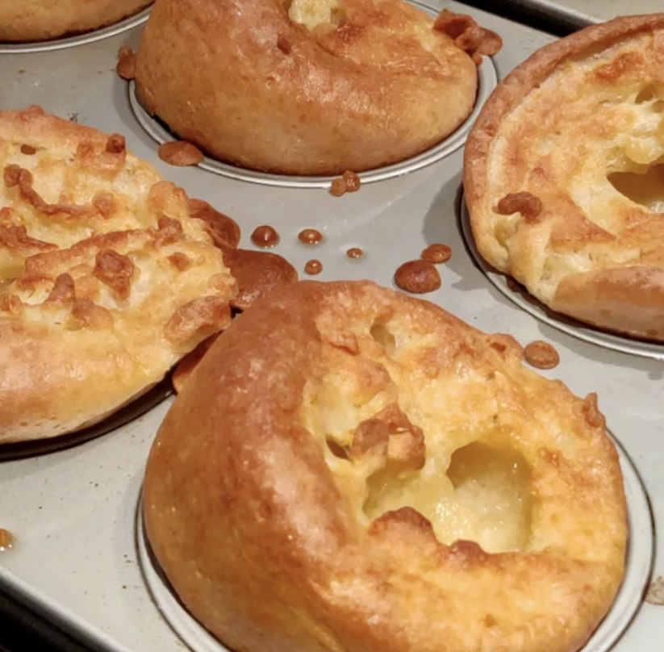

Sky-High Yorkshire Pudding
Description:
These sky-high Yorkshire puddings are baked in muffin cups. They have lots of airy pockets for collecting yummy gravy.
Ingredients:
- 2 cups all-purpose flour
- 4 large eggs
- 2 cups milk
- 1/4 cup vegetable oil
Steps:
- Preheat the oven to 450 degrees F (230 degrees C).
- Whisk milk and eggs together in a large bowl. Whisk in flour, 1 cup at a time, until frothy and well blended. Set aside.
- Place 1 teaspoon oil into each cup of a 12-cup muffin tin.
- Place the tin in the preheated oven until oil is smoking, 5 to 10 minutes. Remove from the oven and quickly ladle about 1/4 cup batter into each cup.
- Return to the oven and bake for 30 to 35 minutes until puddings have risen and are golden brown. Serve immediately.